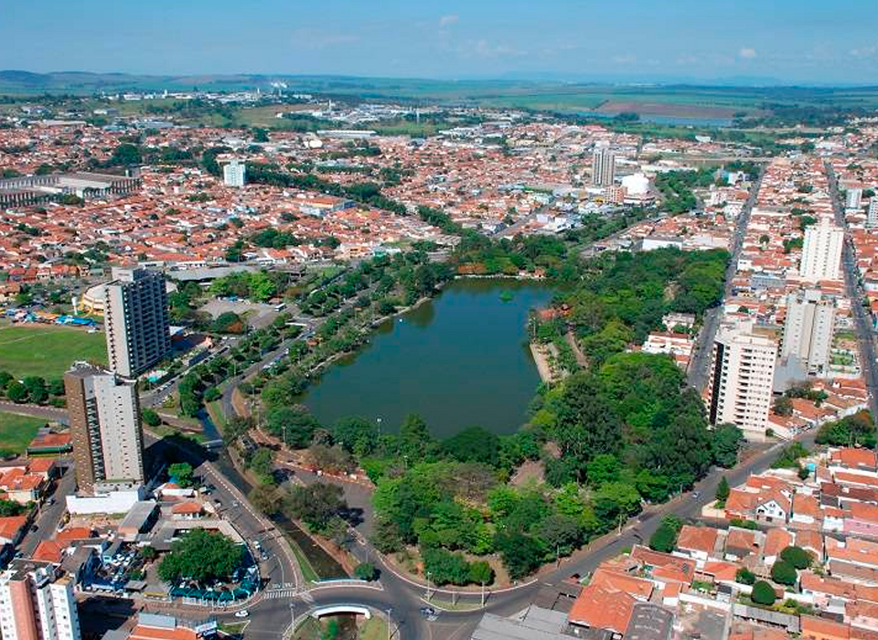

Minha Araras
Minha cidade favorita. Minha cidade natal.

Milton Severino nasceu no dia 21 de novembro de 1931 na cidade de araras, foi professor especializado
em História e Geografia, radialista e Secretário da Câmara de Araras.
Apoiado pelos jovens foi eleito em 1960 o prefeito mais novo do estado de São Paulo, aos 29 anos.
Em sua primeira gestão, realizou o desejo de transformar o brejo onde brincava quando criança em um
lago com parquinho e zoológico, proporcionando á população uma melhora da qualidade de vida e
presenteando Araras com um belíssimo cartão postal.
Em 1970, foi afastado do governo em sua segunda gestão como prefeito, por conta da ditadura militar,
mas com os direitos politicos preservados, foi eleito pela terceira e última vez, prefeito, no ano de 1983.
Casado com Nivalda Batistella e pai de Edson Luíz e Eduardo, Milton faleceu em 1986, aos 55 anos, deixando um legado que Será
lembrado para sempre por gerações.